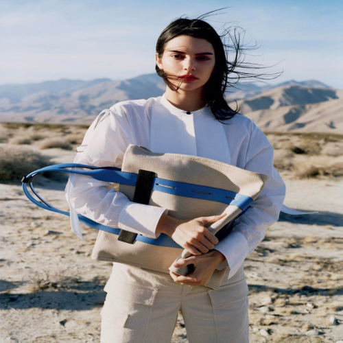
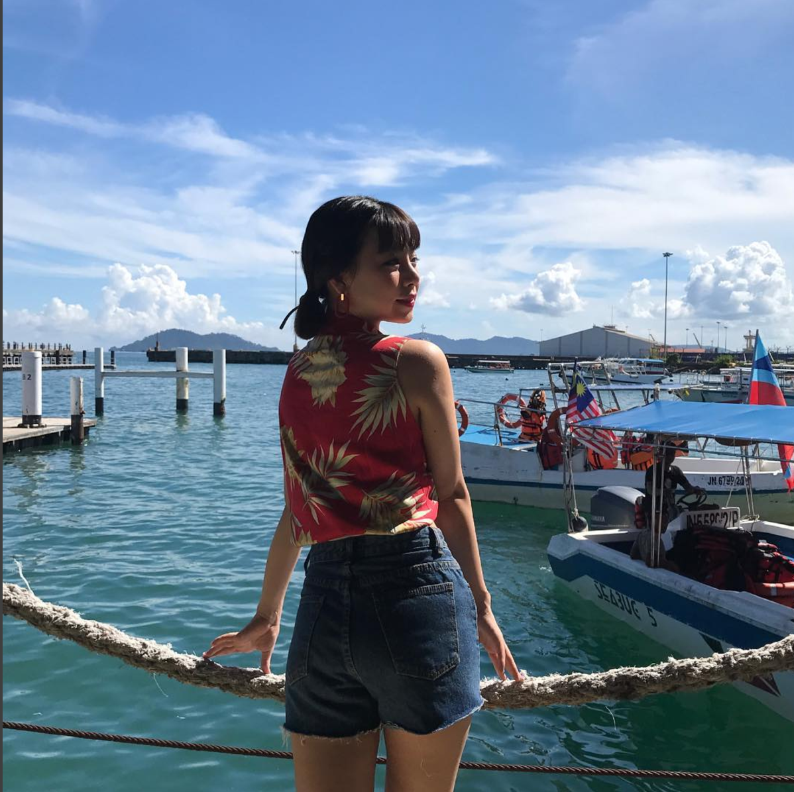
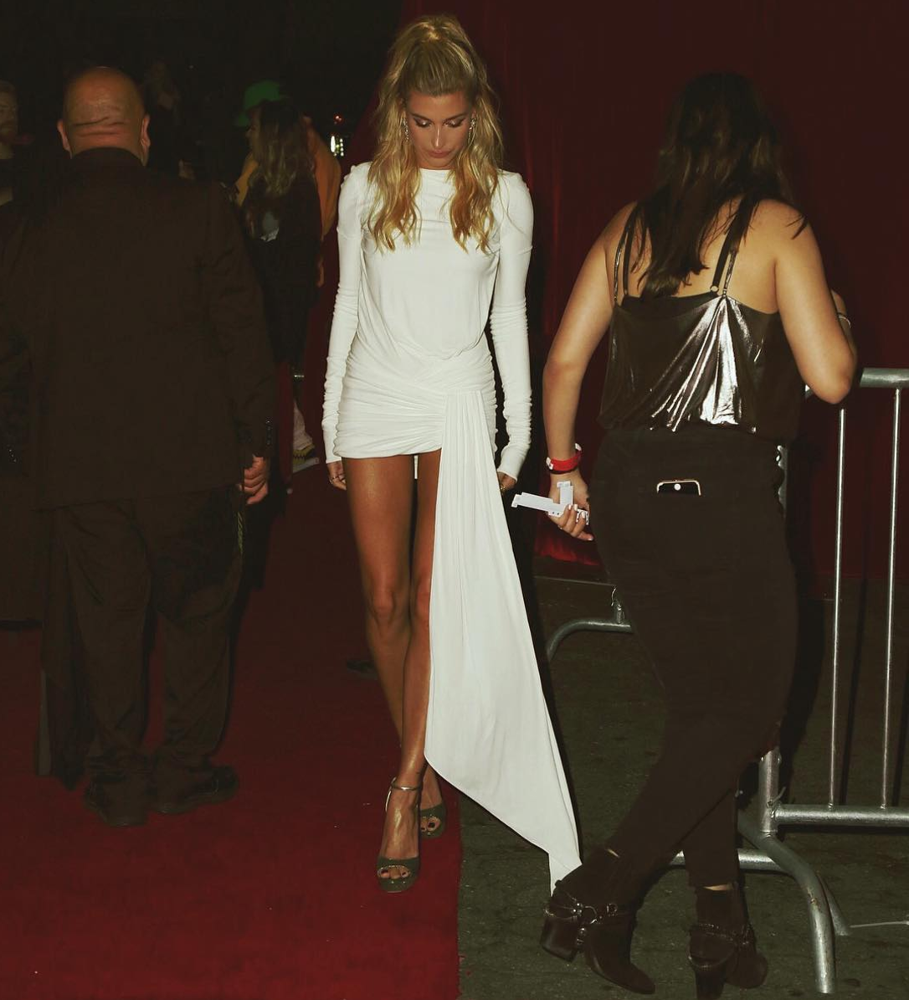

<!--
  Generated template for the RegisterPage page.

  See http://ionicframework.com/docs/components/#navigation for more info on
  Ionic pages and navigation.
-->
<ion-header no-border>
  <ion-navbar>
    <ion-buttons start>
      <button (click)="Vote()" *ngIf="!toggled" ion-button icon-only color="primary">
        <ion-icon name="ios-menu"></ion-icon>
      </button>
    </ion-buttons>
    <ion-title>
      peggy_gould
    </ion-title>
    <ion-buttons end>

      <button (click)="Vote()" *ngIf="!toggled" ion-button icon-only color="primary">
        <ion-icon name="ios-settings"></ion-icon>
      </button>
    </ion-buttons>

  </ion-navbar>


  <!--<ion-toolbar no-border-top>-->
    <!--<ion-segment [(ngModel)]="option">-->
      <!--<ion-segment-button value="view">-->
        <!--{{myposts}} My Fits-->
      <!--</ion-segment-button>-->
      <!--&lt;!&ndash;<ion-segment-button value="following">&ndash;&gt;-->
        <!--&lt;!&ndash;{{followings}} Followings&ndash;&gt;-->
      <!--&lt;!&ndash;</ion-segment-button>&ndash;&gt;-->
      <!--&lt;!&ndash;<ion-segment-button value="follower">&ndash;&gt;-->
        <!--&lt;!&ndash;{{followeds}} Followers&ndash;&gt;-->
      <!--&lt;!&ndash;</ion-segment-button>&ndash;&gt;-->
      <!--<ion-segment-button value="favorites">-->
        <!--{{favoritesLength}} Favorites-->
      <!--</ion-segment-button>-->
    <!--</ion-segment>-->
  <!--</ion-toolbar>-->
</ion-header>

<ion-content>
  <ion-grid>
    <ion-row>
      <ion-col col-6 offset-1 >
        
      </ion-col>
      <ion-col col-4>
        <div class="padding">
          <!--<h5 class="userName">{{user.username}}</h5>-->
          <h5 class="userName">Kendall Jenner</h5>

          <p class="profileText">The beginning of half is whole.</p>
          <button class="add" ion-button outline small color="primary">Add</button>
          </div>
      </ion-col>
    </ion-row>
  </ion-grid>

  <ion-grid>
    <ion-row>
      <ion-col text-center>
        <p class="infoText">Today</p>
        <h5 class="todayCount">98</h5>
      </ion-col>
      <ion-col text-center>
        <p class="infoText">Total</p>
        <h5 class="totalCount">270</h5>
      </ion-col>
      <ion-col text-center>
        <p class="infoText">Rank</p>
        <h5 class="rankCount">23</h5>
      </ion-col>

    </ion-row>
  </ion-grid>

  <hr>
  <ion-grid>
    <ion-row>
      <ion-col col-6 offset-1>
        <p class="infoText"><ion-icon name="ios-shirt"></ion-icon>&nbsp;This Week's Fits</p>
      </ion-col>
    </ion-row>
  </ion-grid>


  <ion-scroll scrollX="true" class="twPic">


    
    
    
    
    
    
    


  </ion-scroll>

  <hr/>

  <super-tabs toolbarColor="dark">
    <super-tab [root]="tab1" title="My Fits"></super-tab>
    <super-tab [root]="tab2" title="Favorites"></super-tab>

  </super-tabs>


  <!--<div [ngSwitch]="option">-->
    <!--<ion-list *ngSwitchCase="'view'">-->
      <!--<ion-item *ngFor="let post of mypostlist">-->
        <!--<ion-thumbnail item-start>-->
          <!---->
        <!--</ion-thumbnail>-->
        <!--<h2>{{post.likeCnt}} Likes</h2>-->
      <!--</ion-item>-->
    <!--</ion-list>-->

    <!--<ion-list *ngSwitchCase="'favorites'">-->
      <!--<ion-item *ngFor="let favorite of favorites">-->

        <!--<h2>{{favorite.username}}</h2>-->
      <!--</ion-item>-->
    <!--</ion-list>-->
    <!--<ion-list *ngSwitchCase="'following'">-->
      <!--<ion-item *ngFor="let following of user.following">-->
        <!--<ion-thumbnail item-start>-->
          <!---->
        <!--</ion-thumbnail>-->
        <!--<h2>{{following.name}}</h2>-->
      <!--</ion-item>-->
    <!--</ion-list>-->

    <!--<ion-list *ngSwitchCase="'follower'">-->
      <!--<ion-item *ngFor="let followed of user.followed">-->
        <!--<ion-thumbnail item-start>-->
          <!---->
        <!--</ion-thumbnail>-->
        <!--<h2>{{followed.name}}</h2>-->
      <!--</ion-item>-->
    <!--</ion-list>-->
  <!--</div>-->
</ion-content>

